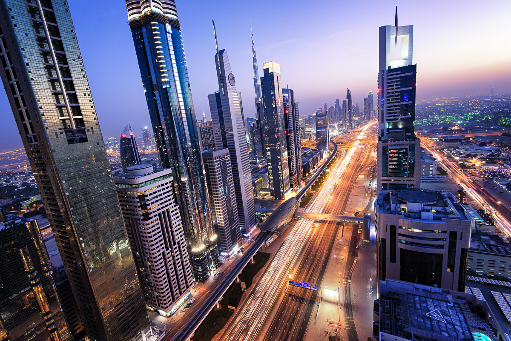

first of all, i love my mother very much and she loves me too, also her name is sujatha! she works at a hospital named decca hospital with my dad. she is very kind and loves to help people in need! thats why i love her soooo much!! her age is 48. i always support her and make her happy!
Definition
A mother is the female parent of a child. A woman may be considered a mother by virtue of having given birth, by raising a child who may or may not be her biological offspring, or by supplying her ovum for fertilisation in the case of gestational surrogacy. A biological mother is the female genetic contributor to the creation of the infant, through sexual intercourse or egg donation. A biological mother may have legal obligations to a child not raised by her, such as an obligation of monetary support. An adoptive mother is a female who has become the child's parent through the legal process of adoption. A putative mother is a female whose biological relationship to a child is alleged but has not been established. A stepmother is a non-biological female parent married to a child's preexisting parent, and may form a family unit but generally does not have the legal rights and responsibilities of a parent in relation to the child.
I love my father just the same as my mother! my dad works in a hospital that is named decca hospital. His name is thanaraj and he is very kind and has a soft nature. basically he doesn't like to hurt or hit anyone, even me. that's why i like him very much!!! his age is 56.
Definition
A father is the male parent of a child. Besides the paternal bonds of a father to his children, the father may have a parental, legal, and social relationship with the child that carries with it certain rights and obligations. A biological father is the male genetic contributor to the creation of the infant, through sexual intercourse or sperm donation. A biological father may have legal obligations to a child not raised by him, such as an obligation of monetary support. An adoptive father is a man who has become the child's parent through the legal process of adoption. A putative father is a man whose biological relationship to a child is alleged but has not been established. A stepfather is a non-biological male parent married to a child's preexisting parent and may form a family unit but generally does not have the legal rights and responsibilities of a parent in relation to the child.
I love my sister, her name is rashmithaa and she is very talkative. Her handwriting is very beautiful and i like it very much. She studies well and helps me study too!! she is 22 years old. That's why i love and like her very much.
Definition
A sister is a woman or a girl who shares parents or a parent with another individual; a female sibling. The male counterpart is a brother. Although the term typically refers to a familial relationship, it is sometimes used endearingly to refer to non-familial relationships. A full sister is a first-degree relative. The English word sister comes from Old Norse systir which itself derives from Proto-Germanic *swestēr, both of which have the same meaning, i.e. sister. Some studies have found that sisters display more traits indicating jealousy around their siblings than their male counterparts, brothers. In some cultures, sisters are afforded a role of being under the protection by male siblings, especially older brothers, from issues ranging from bullies or sexual advances by womanizers. In some quarters, the term sister has gradually broadened its colloquial meaning to include individuals stipulating kinship.
I love my grandparents so much since they are very nice and kind. my grandmother's name is vijaya and my grandfather's name is shankar and they are very old, my grandmother is 85 years old and my grandfather is 93 years old!
Definition
Grandparents, individually known as grandmother and grandfather, are the parents of a person's father or mother, paternal or maternal. Every sexually reproducing living organism who is not a genetic chimera has a maximum of four genetic grandparents, eight genetic great-grandparents, sixteen genetic great-great-grandparents, thirty-two genetic great-great-great-grandparents, sixty-four genetic great-great-great-great grandparents, etc. In the history of modern humanity, around 30,000 years ago, the number of modern humans who lived to be a grandparent increased. It is not known for certain what spurred this increase in longevity, but it is generally believed that a key consequence of three generations being alive together was the preservation of information which could otherwise have been lost. an example of this important information might have been where to find water in times of drought.
My name is rabinesh and my age is 10. I go on many classes like coding and drwing classes! i love to play and my hobbies are to read and dance. i can even play a musical instrument. it is the drums, i have 1 in my house! all of the guests are always impressed about my skills and they always congratulate me!
Definition
A child (pl. children) is a human being between the stages of birth and puberty, or between the developmental period of infancy and puberty. It may also refer to an unborn human being. In English-speaking countries, the legal definition of child generally refers to a minor, in this case as a person younger than the local age of majority (there are exceptions like, for example, the consume and purchase of alcoholic beverage even after said age of majority), regardless of their physical, mental and sexual development as biological adults. Children generally have fewer rights and responsibilities than adults. They are generally classed as unable to make serious decisions.
East Coast Road (ECR), combination of SH-49, NH-332A, NH-32, officially known as Mutthamizh Arignar Kalaignar Road without public voting, is a two-lane highway (now being partially widened to four lanes from Chennai to Mamallapuram) in Tamil Nadu, India, built along the Bay of Bengal coast . It connects Tamil Nadu's state capital Chennai with Kanyakumari via Puducherry, Cuddalore, Chidambaram, Sirkali, Thirukkadaiyur, Tharangambadi, Karaikal, Nagore, Nagapattinam, Thiruthuraipoondi, Muthupet, Adirampattinam, Manora,Peravurani,Manamelkudi, Mimisal, Ramanathapuram, Rameswaram,Thoothukudi, Tiruchendur, Uvari, Kudankulam. The total length of the road is about 777 km between Chennai and Kanyakumari.
Videos
A map to chennai ECR (east coast road)
UAE (United Arabian Emirates) (Dubai)

UAE (United Arabian Emirates) (Dubai)
We visited it in 12-01-2024
Dubai is the most populous city in the United Arab Emirates (UAE) and the capital of the Emirate of Dubai, the most populated of the country's seven emirates. Founded in the 1800s as a fishing village, Dubai has emerged as a major center for regional and international trade since the early 20th century and early 21st centuries with a focus on tourism and luxury. It has the second-most five-star hotels in the world and the tallest building in the world, the Burj Khalifa, which is 828 metres (2,717 ft) tall. In the eastern Arabian Peninsula, on the coast of the Persian Gulf, it is a major global transport hub for passengers and cargo. Oil revenue helped accelerate the development of the city, which was already a major mercantile hub.
Videos
A map to UAE (United Arabian Emirates) (Dubai)
Kerala (Thekkady)
Kerala (Thekkady)
We visited it in 27-05-2024
Thekkady (Idukki district) is a town near Periyar National Park, an important tourist attraction in the Kerala state of India. The name Thekkady is derived from the word "thekku" which means teak. Temperatures are lowest in the months of December to January and highest in the months of April to May. Thekkady is situated about 257 km (160 mi) from Trivandrum, 145 km from Cochin International Airport and 114 km from Kottayam railway station. It is 4 km from Kumily, a plantation town on the Kerala-Tamil Nadu border. The sanctuary is famous for its dense evergreen, semi-evergreen, moist deciduous forests and savanna grass lands. It is home to herds of elephants, sambar, tigers, gaur, lion-tailed macaques and Nilgiri langurs. Due to the density of the forest, sightings of elephants and especially tigers are highly unlikely.
Videos
A map to Kerala (Thekkady)
Tamilnadu (Coimbatore)
Tamilnadu (Coimbatore)
We visited it in 11-07-2022
Coimbatore, sometimes shortened as Kovai, is one of the major metropolitan cities in the Indian state of Tamil Nadu. It is located on the banks of the Noyyal River and surrounded by the Western Ghats. Coimbatore is the second largest city in Tamil Nadu after Chennai in terms of population and the 16th largest urban agglomeration in India as per the census 2011. It is the administrative capital of Coimbatore District and is administered by the Coimbatore Municipal Corporation which was established in 1981. The region around Coimbatore was ruled by the Cheras during the Sangam period between the 1st and the 4th centuries CE and it served as the eastern entrance to the Palakkad Gap, the principal trade route between the west coast and Tamil Nadu. Coimbatore was located along the ancient trade route Rajakesari Peruvazhi that extended from Muziris to Arikamedu in South India. The medieval Cholas conquered the Kongu Nadu in the 10th century CE. The region was ruled by Vijayanagara Empire in the 15th century followed by the Nayaks who introduced the Palayakkarar system under which Kongu Nadu region was divided into 24 Palayams.
Videos
A map to Tamilnadu (Coimbatore)
Tamilnadu (Yercaud)
Tamilnadu (Yercaud)
We visited it in 26-11-2021
Yercaud, also spelt Erkad, is a town and hill station in Salem District in Tamil Nadu, India. Located in Servarayan Hills in the Eastern Ghats, it is situated at an altitude of 1,515 m (4,970 ft). Stone-age implements have been found near an ancient shrine located in the Servarayan Hills, about 5 km from the Yercaud lake. In the 1820s, M. D. Cockburn, the collector of Salem district facilitated the establishment of coffee plantations and citrus fruit saplings imported from South Africa. It was later discovered by Thomas Munro, the Governor of Madras Presidency in 1842 and popularized as a recreation retreat. It is located in the Shevaroy hills in the Eastern Ghats. The total extent of Yercaud taluk is 382.67 km2 (147.75 sq mi) including reserve forests. It is situated at an altitude of 1,515 metres (4,970 ft) above sea level, and the highest point in Yercaud is the Servarayan temple, at 1,628 m (5,342 ft).
Videos
A map to Tamilnadu (Yercaud)
More Families!
This is my family that is in my dad's house only. here are more families that are in my different unkle's house!